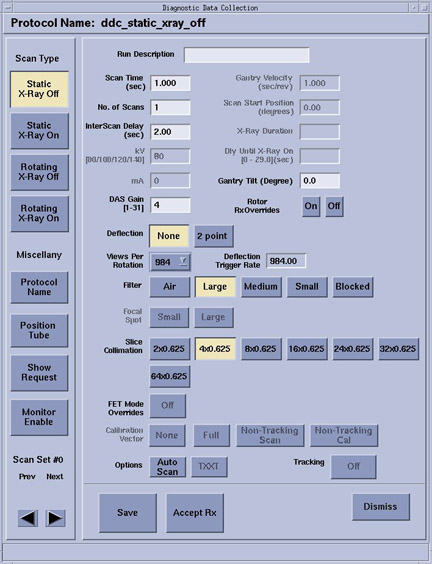

Proprietary to General Electric
Direction 5307452-8EN, Rev# 4
Discovery CT750 HD Service Methods - Adv
Proprietary to General Electric |
| Last Revised: | October 13, 2008 |
Diagnostic Data Collection is a tool that allows the user to scan and create scan files using user selectable scan types and parameters as an aid in troubleshooting and verifying the data integrity of the DAS/Detector subsystem.
HOW TO ACCESS DDC - ADVANCED SERVICE
Select [DIAGNOSTICS] .
Select [DATA ACQUISITION] folder if existing or just go to the next step.
Select [DIAGNOSTIC DATA COLLECTION] .
Use DDC to collect DAS data with and without x-Ray and/or rotation.
Use the Scan Analysis tool to examine collected data.
The Diagnostic Data Collection Interface consists of three main areas:
Command Area
Work Area
Status Message Area
Illustration 1: DDC Interface (example is of Static X-Ray-Off)

The Command Area consists of a vertical palette of push buttons located on the left hand side of the screen. These include the four scan type selection buttons and four miscellaneous buttons; Protocol Name, Position Tube, Show Request, and Monitor Enable buttons.
The four scan type buttons (static xray off/on and rotating xray off/on) are provided to select the scan type indicated by the button label. When the user selects a scan type, the corresponding user-modifiable scan parameters become selectable, and the parameters that the user may not modify become insensitive.
When this button is selected, the Protocol Selection List pop-up window ( Illustration 2) will appear. This list contains all the available protocols on the system. When the user selects a protocol for loading, the values of the scan parameters (that were stored in the protocol file) display in the appropriate areas of the screen.
Illustration 2: DDC Protocol List

Diagnostic Data Collection (DDC) Protocols are located in the following directory on the OC: /usr/g/protocols/service/v1.1
Most of these protocols are used by tools and diagnostic scans. Depending on troubleshooting experience, these protocols can be selected from within DDC, and accepted “as is” or some of the parameters can changed for the current exam.
When this button is selected, the Tube Position pop-up window ( Illustration 3) appears. The tube positioning function allows the user to position the tube between 0 and 360 degrees of the rotation.
Illustration 3: Position Tube Pop-Up Window

The show request button opens a window that shows all the scan parameters the system will use for the chosen scan setup as a list. This window is a list of the contents that would be the scan header of the scan if it was run.
Selecting monitor enable will post the Kv and mA values read for the scan in the gesyslog.
All scan parameters in the fields to the right of the Command Area that may be modified, depending on the scan type and protocol selected, are displayed in the Work Area. Each scan parameter value is presented in a text field or indicated by a toggle button in a depressed state. When a value is displayed and is sensitive in a text field, a new value can be entered directly to replace the old value.
Status messages display in this area at the very bottom of the GUI screen. The messages displayed in this area are not persistent and will disappear after a few seconds.
The Diagnostic Data Collection (DDC) tool supports the following scan types:
Static X-Ray Off.
Static X-Ray On.
Rotating X-Ray Off.
Rotating X-Ray On.
Each scan type is presented as a selectable button on the left-hand side of the DDC screen. Each scan type has an associated set of scan parameters that the user may select.
There are additional scan parameters displayed on the screen that the user will not be allowed to modify, presented as insensitive for the following reasons:
The parameters are not required for the scan type selected.
The parameters will not be functional until a future release or not applicable to this system type.
The following table shows what scan parameters are available in each of the four scan types:
Table 1: Scan Parameters vs. Scan Types
| SCAN PARAMETER | STATIC X-RAY-ON | STATIC X-RAY OFF | ROTATING X-RAY-ON | ROTATING X-RAY-OFF |
|---|---|---|---|---|
| Run Description | X | X | X | X |
| Scan Time | X | X | X | X |
| No. of Scans | X | X | X | X |
| Inter Scan Delay | X | X | X | X |
| Trigger Rate (VCT) Views per Rotation (HD) | X | X | X | X |
| Calibration Vector | X | X | ||
| Rotor Rx Overrides | X | X | X | X |
| kv | X | X | ||
| mA | X | X | ||
| DAS Gain | X | X | X | X |
| Gantry Velocity | X | X | ||
| Start Position | X | X | ||
| X-ray Duration | ||||
| Dly Until Xray On | ||||
| Focal Spot | X | X | ||
| Filter | X | X | X | X |
| Slice Collimation | X | X | X | X |
| FET modes Overrides | ||||
| Deflection | X | X | X | X |
For each of the scan types selected, the user may specify the following options, which are presented in the DDC GUI as buttons close to the bottom of the screen.
Auto Scan
TXXT
For each of the scan types selected the user may specify the auto scan option.
TXXT (Trigger On, X-ray On, X-ray Off, Trigger Off) is an option for the Static X-Ray On and the Rotating X-Ray On scan type selections. This button becomes insensitive when the Static X-Ray Off or Rotating X-Ray Off scan type is selected.
The TXXT button is associated with the following scan parameters:
X-ray Duration
Dly Until X-ray On
Use Retro Recon screen on left monitor to list/select the DDC-acquired data. Use Retro Recon function to reconstruct the DDC-acquired data into images.
DDC scans appear in Retro Recon List/Select when they consist of:
Rotating X-Ray On scans
Full rotation scans consisting of 984 views
Scans that have a corresponding cal file
VCT 64-slice systems do not use FET modes.